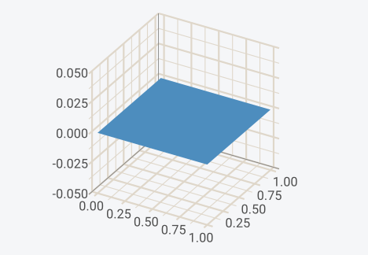
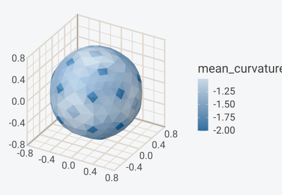
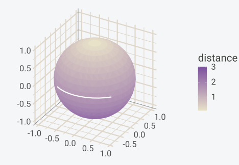
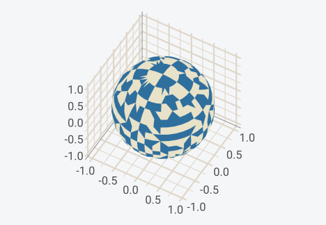
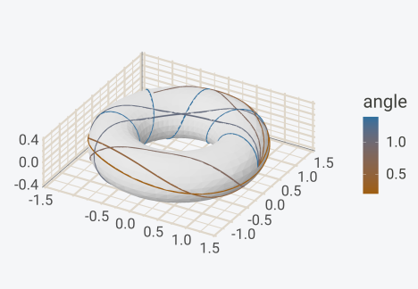
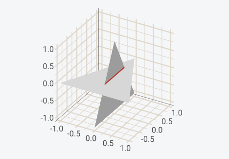

A triangle mesh stores a surface as vertices and the faces between
them. This article reads a mesh from a file, cleans up a mesh extracted
from data, colours it by curvature, and measures distances along the
surface instead of through space. Installation is covered in Get started; Surfaces, solids and
fields introduces mesh_3d() and
geom_mesh_3d().
Read a file with
read_mesh_3d().Process the mesh with
mesh_decimate(),mesh_subdivide(),mesh_smooth()andmesh_curvature().Measure along the surface with
stat_geodesic_distance_3d(),stat_geodesic_path_3d()andstat_logmap_3d().
Reading a mesh file
read_mesh_3d() reads Wavefront OBJ, PLY and STL files
and returns the corner table that geom_mesh_3d() draws: one
row per corner of each face, with the vertex position and the integer
columns .face, .corner and
.vertex. The file below holds one square face.
path <- tempfile(fileext = ".obj")
writeLines(c("v 0 0 0", "v 1 0 0", "v 1 1 0", "v 0 1 0", "f 1 2 3 4"), path)
square <- read_mesh_3d(path)
square
#> .face .corner .vertex .mesh x y z
#> 1 1 1 1 1 0 0 0
#> 2 1 2 2 1 1 0 0
#> 3 1 3 3 1 1 1 0
#> 4 1 4 4 1 0 1 0
ggplot() + geom_mesh_3d(data = square, fill = "#2E6F9E") + coord_3d()
Cleaning a mesh from data
A level surface extracted from a scalar field has many small,
unevenly shaped triangles. layer_data() returns the mesh
that stat_isosurface_3d() computes, here the sphere where
.
grid <- expand.grid(x = seq(-1, 1, length.out = 12),
y = seq(-1, 1, length.out = 12),
z = seq(-1, 1, length.out = 12))
grid$value <- with(grid, x^2 + y^2 + z^2)
level <- ggplot(grid, aes(x, y, z = z, value = value)) +
stat_isosurface_3d(levels = 0.6) + coord_3d()
sphere <- layer_data(level)[c("x", "y", "z", ".face", ".corner", ".vertex")]
length(unique(sphere$.face))
#> [1] 620mesh_decimate() keeps a fraction of the faces by
collapsing the edges whose removal changes the shape least (Garland and
Heckbert 1997).
mesh_subdivide() splits every triangle into four, and
mesh_smooth() moves each vertex toward its neighbours
without shrinking the surface (Taubin 1995).
coarse <- mesh_decimate(sphere, 0.25)
smooth <- mesh_smooth(mesh_subdivide(coarse), iterations = 5)
c(extracted = length(unique(sphere$.face)),
decimated = length(unique(coarse$.face)),
smoothed = length(unique(smooth$.face)))
#> extracted decimated smoothed
#> 620 154 616Curvature
mesh_curvature() adds the mean and Gaussian curvature at
each vertex (Meyer et al. 2003). A sphere
of radius
has mean curvature of magnitude
everywhere, 1.29 for the radius
here; the sign depends on which way the faces are oriented. The fill
shows where the processed triangulation departs from a constant
value.
curved <- mesh_curvature(smooth)
summary(curved$mean_curvature)
#> Min. 1st Qu. Median Mean 3rd Qu. Max.
#> -2.9000 -1.5114 -1.3780 -1.3990 -1.1454 -0.9778
ggplot() +
geom_mesh_3d(data = curved, aes(fill = mean_curvature), colour = NA) +
scale_fill_gradient(low = "#2E6F9E", high = "#C9D9E6") +
coord_3d(aspect = "data")
mesh_normals() adds vertex normals, and
mesh_remesh() rebuilds the surface with triangles of a
target edge length.
Distance along the surface
Two points on a sphere are closer through the ball than across its
surface. The geodesic distance is the length of the shortest path that
stays on the surface. The unit sphere below is built with
stat_parametric_3d() and converted to a mesh.
ball <- function(u, v) list(x = cos(u) * sin(v), y = sin(u) * sin(v), z = cos(v))
faces <- layer_data(ggplot() + coord_3d() +
stat_parametric_3d(fun = ball, v = c(0, pi), n = c(40, 21), closed = c(TRUE, FALSE)))
globe <- mesh_3d(unique(faces[c("x", "y", "z", ".vertex")]),
faces[c(".face", ".corner", ".vertex")])stat_geodesic_distance_3d() computes the distance from a
source point with the heat method (Crane, Weischedel and Wardetzky 2013), and
stat_geodesic_path_3d() draws the shortest path between two
points.
ggplot(globe) +
stat_geodesic_distance_3d(aes(fill = after_stat(distance)), source = c(0, 0, 1)) +
stat_geodesic_path_3d(from = c(0.8, -0.6, 0), to = c(-0.6, -0.8, 0),
colour = "white", linewidth = 1) +
scale_fill_gradient(low = "#E8E2C8", high = "#7A4F9E") +
coord_3d(aspect = "data")
On the unit sphere the distance from the pole equals the polar angle,
so it runs from 0 at the pole to
at the opposite pole. mesh_geodesic_distance() returns the
same values as a column, and mesh_geodesic_path() returns
the path with its length.
range(mesh_geodesic_distance(globe, source = c(0, 0, 1))$distance)
#> [1] 0.00000 3.13332
attr(mesh_geodesic_path(globe, from = c(1, 0, 0), to = c(0, 1, 0)), "length")
#> [1] 1.568201The quarter great circle between the two points has length .
Log map coordinates
The log map gives each point the direction and distance at which it
is reached from a source, as two coordinates logmap_u and
logmap_v in the tangent plane (Sharp, Soliman and Crane 2019). A checkerboard in
those coordinates shows how the surface is unrolled around the
source.
ggplot(globe) +
stat_logmap_3d(aes(fill = after_stat(
factor((floor(4 * logmap_u) + floor(4 * logmap_v)) %% 2))),
source = c(0, 0, 1), direction = c(1, 0, 0)) +
scale_fill_manual(values = c("#2E6F9E", "#E8E2C8"), guide = "none") +
coord_3d(aspect = "data", elevation = 50)
Geodesics on a parametric surface
On a surface given by a formula,
stat_parametric_geodesic_3d() integrates the geodesic
equations from a starting parameter point in several directions.
Geodesics on a torus started at different angles wind around it
differently.
torus <- function(u, v) list(x = (1 + 0.4 * cos(v)) * cos(u),
y = (1 + 0.4 * cos(v)) * sin(u), z = 0.4 * sin(v))
ggplot() +
geom_parametric_3d(fun = torus, n = c(48, 24), closed = TRUE, fill = "grey85") +
stat_parametric_geodesic_3d(aes(colour = after_stat(angle)), fun = torus,
start = c(0, 0), angle = seq(0.2, 1.4, by = 0.3), length = 12) +
scale_colour_gradient(low = "#9E5E0F", high = "#2E6F9E") +
coord_3d(aspect = "data")
Where a mesh crosses itself
stat_self_intersection_3d() draws the curves along which
faces of a mesh pass through each other. Two triangles that cross meet
in a segment.
corners <- data.frame(x = c(-1, 1, 0, 0, 0, 0), y = c(-1, -1, 1, -1, 1, 0),
z = c(0, 0, 0, -1, -1, 1))
crossing <- mesh_3d(corners, matrix(1:6, 2, byrow = TRUE))
ggplot(crossing) + geom_mesh_3d(fill = "grey80") +
stat_self_intersection_3d(colour = "#B5342B", linewidth = 1) + coord_3d()
Complex functions, knots and immersed surfaces uses the same stat on surfaces that cannot be embedded in space without crossing.
References
Crane, K., Weischedel, C. and Wardetzky, M. (2013). Geodesics in heat: a new approach to computing distance based on heat flow. ACM Transactions on Graphics 32(5), 152. https://doi.org/10.1145/2516971.2516977
Garland, M. and Heckbert, P. S. (1997). Surface simplification using quadric error metrics. SIGGRAPH ’97, 209-216. https://doi.org/10.1145/258734.258849
Meyer, M., Desbrun, M., Schröder, P. and Barr, A. H. (2003). Discrete differential-geometry operators for triangulated 2-manifolds. Visualization and Mathematics III, 35-57. https://doi.org/10.1007/978-3-662-05105-4_2
Sharp, N., Soliman, Y. and Crane, K. (2019). The vector heat method. ACM Transactions on Graphics 38(3), 24. https://doi.org/10.1145/3243651
Taubin, G. (1995). A signal processing approach to fair surface design. SIGGRAPH ’95, 351-358. https://doi.org/10.1145/218380.218473